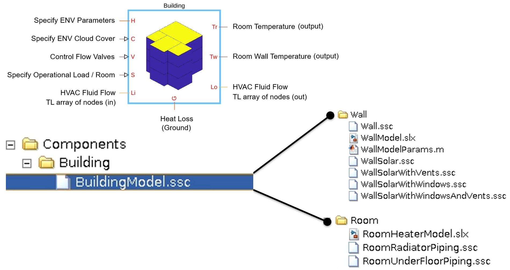

Custom Block: Building Model
The source code for the block is in the SSC file Components/Building/BuildingModel.ssc.
Contents
A building consists of multiple apartments and each apartment consists of multiple rooms. Each room is modelled as air thermal mass with other physics added to it as custom components (radiators, underfloor piping, walls, and roof/floors). The block allows you to analyze building HVAC requirements, design your BEMS, and evaluate energy usage during real world operational scenarios.
This block defines all geometrical properties of a 3D building and the solar loading on it over a specified period of time. It contains all the essential information to build a thermal network for simulating a building physics. A pictorial representation and connection of different building components is given below. The block has ports:
- Port H is the thermal node to connect the building to the environment. This node connects the building wall and roof models to the Ambient custom component model.
- Port G is the thermal node to connect the building to the ground. This node connects the floor of the 1st level in a building to the ground. Heat loss through the ground is modelled using this node.
- Port Li is a bundle of Simscape Thermal Liquid nodes, with one Thermal Liquid node per room in the building. It represents the heating or cooling fluid inlet port to the room.
- Port Lo is a bundle of Simscape Thermal Liquid nodes, with one Thermal Liquid node per room in the building. It represents the heating or cooling fluid outlet port from the room.
- Input port C is a scalar input, varying between 0-1, to specify the cloud coverage level. To model a cloudless sky, set C to 0. To set a very cloudy sky, set C to 1. The Ambient custom component block provides input for port C.
- Input port V is a scalar matrix, to specify valve closure level for each room. The matrix size equals the number of rooms in the building. Each row of the matrix specifies the apartment number, while the column specifies the room number. Each room could have different values for valve closure, ranging between 0-1. Set the elements of V to 0 to close the valves carrying fluid to the room. Set the elements of V to 1 to fully open the valve carrying heating/cooling fluid to the room. This port is visible only when you set the block mask parameter Select room modelling option to HVAC: Room Radiator Only, or HVAC: Room Underfloor Heating/Cooling Only, or HVAC: Room Radiator with Underfloor Heating/Cooling.
- Port S is a scalar matrix input port, to specify heat addition to each room.
- Ports Tr and Tw are outputs for the room and the wall temperatures.

The buildingModel.ssc defines the building custom component. The block mask has sections like Building Physics, Wall Properties, Window Glass Properties, Heat Transfer, and optionally Room Physics. The buildingModel.ssc file loops over a list of all external walls, roof, and floors and connects the wall and roof custom components to thermal node H and floor to the ground thermal node G. Room is modelled using thermal mass library block. Depending on room fidelity selected by the user, the room radiator and underfloor piping models are connected to the room thermal mass.
Building Physics
The parameters under this section are defined by running the workflow scripts in this project. All block parameter values in this section end with the comment string ' % Parameterized on :dd-mmm-yyyy hh:mm:ss ' added at the end of the parameters values. This time specifies when the block was parameterized using the workflow scripts. This section defines building room-to-room connectivity thermal network data as well as room walls/roof/floor to environment connectivity data.
- Number of apartments, nApts, specififed as an integer value greater than or equal to 1.
- Number of rooms, nRooms, specified as an integer value greater than or equal to 1.
- Room volume matrix, roomVolMat, specified as a matrix of scalar quantities greater than 0. The number of rows and columns of this matrix must be equal to the Number of apartments and the Number of rooms parameters.
- Room connectivity matrix, roomConnMat, specified as a matrix with 6 columns and number of rows equal to the number of room-to-room inter-connections. Each row entry defines a connection between two rooms. Column 1 and 2 specify the apartment and room number for the 1st room. Column 3 and 4 specify the apartment and room number for the 2nd room. The 5th column specifies the contact area between the two rooms, with area being defined in units of meter-square. The 6th columns specifies the fraction, 0-1, of solid wall represented by the connection. A value of 1 specifies a solid wall connection while a value closer to 0 defines an opening connecting the two rooms.
- Floor connectivity matrix, floorConnMat, specified as a matrix with 6 columns and number of rows equal to the number of room-to-room connections across different floors. Each row entry defines a connection between two rooms across the floor/roof of rooms at higher/lower level. Column 1 and 2 specify the apartment and room number for the 1st room. Column 3 and 4 specify the apartment and room number for the 2nd room. The 5th column specifies the contact area between the two rooms, with area being defined in units of meter-square. The 6th columns specifies the fraction, 0-1, of solid wall represented by the connection. A value of 1 specifies a solid wall connection while a value closer to 0 defines an opening connecting the two rooms.
- Wall to ambient contact area matrix, roomEnvConnMat, specified as a matrix with 6 columns and the number of rows equal to the number of external walls in the building. Each row entry defines a wall to ambient connectivity information. Each was is given a unique identification number, based on the apartment and the room it is associated with. Columns 1, 2, and 3 specifies the apartment number, room number, and the wall number to define the indicies of the wall (of a room) connected to the environment. Columns 4, 5, and 6 specify the area of the solid wall, window on the wall, and vent on the wall. These area are required to compute the solar load entering the room directly and the solar load conducting into the room.
- Wall hourly-solar-radiation matrix, roomEnvSolarRad, specified as a matrix of scalar values. The total number of rows is equal to the total number of external walls in the building which equals the number of rows in roomEnvConnMat. The total number of columns in roomEnvSolarRad equal the number of hours the solar radiation is computed. Each column is solar radiation data at an instance of time, on the external walls of the building. If the block has been parameterized for 10 days of solar radiation, then the number of columns must be equal to 10 x 24, or 240.
- Ground floor room thermal connectivity, floorGroundConn, specified as a matrix with 3 columns and number of rows equal to the number of rooms at each given floor level. Each row of data is the information on area connectivity between a room and the ground. Column 1 and 2 specify the apartment and room number; column 3 specifies, in square meters, the area of the room floor.
- Select room modelling option, roomModelOption, is a drop down list that enables you to switch between different room modelling and analysis options. You can chose from 5 different options: Thermal Load, Thermal Requirements, HVAC: Room Radiator Only, HVAC: Room Underfloor Heating/Cooling Only, and HVAC: Room Radiator with Underfloor Heating/Cooling. The 1st two options, Thermal Load and Thermal Requirements are selected during HVAC requirement analysis for the building. The last 3 options enable you to add radiator, or under-floor pipes, or both, to your room for heating or cooling. These 3 fidilities are preferred for BEMS analysis and control design. If you select any of these last 3 options, you will need to specify Room Physics parameters too. To learn more about the room modelling options, see Room Modelling Options in Building Custom Component.
- Roof to ambient contact area matrix, roofEnvConnMat, specified as a matrix with 3 columns and number of rows equal to the number of rooms at top floor level. Each row of data is the information on area connectivity between a room and the environment, through the roof. Column 1 and 2 specify the apartment and room number; column 3 specifies, in square meters, the area of the roof of the room.
- Roof hourly-solar-radiation matrix, roofEnvSolarRad, specified as a matrix of scalar values. The total number of rows is equal to the total number of roofs defined in the building, which is the row size of roofEnvConnMat. The total number of columns is equal to the number of hours the solar radiation is computed. Each column data represents solar radiation data at an instance of time, on the roof of the building. If the block has been parameterized for 10 days of solar radiation, then the number of columns must be equal to 10 x 24 = 240.
These two parameters appear when Select room modelling option to HVAC: Room Radiator Only, or HVAC: Room Underfloor Heating/Cooling Only, or HVAC: Room Radiator with Underfloor Heating/Cooling. When you select one of these options, a thermal liquid (TL) array of nodes port also appears on the block mask. Each thermal node is connected to one room in the building, or the number of thermal nodes is equal to the total number of rooms defined in the building.
- Room radiator projection area matrix, roomRadiatorArea, specified as matrix of scalar values. The number of rows and columns of this matrix is equal to the Number of apartments and Number of rooms parameters. The matrix stores the surface area of radiator in each room.
- Room under floor piping area matrix, roomUFPipingArea, specified as a matrix of scalar values. The number of rows and columns of this matrix is equal to the Number of apartments and Number of rooms parameters. The matrix stores the surface area of underfloor piping defined in each room.
Room Physics
You only need to parameterize this section when you set Select room modelling option to HVAC: Room Radiator Only, HVAC: Room Underfloor Heating/Cooling Only, or HVAC: Room Radiator with Underfloor Heating/Cooling.
- Radiator pipe gap in layout, radiatorPipeGap, specified as a scalar value. This parameter defines the gap between pipe outer surfaces in a radiator.
- Radiator pipe hydraulic diameter, radiatorPipeHydrDia, specified as a scalar value. This parameter defines the radiator pipe hydraulic diameter.
- Radiator pipe cross-sectional area, radiatorPipeArea, specified as a scalar value. This parameter defines the radiator pipe cross-sectional area.
- Under floor pipe hydraulic diameter, UFPipeHydrDia, specified as a scalar value. This parameter defines the under floor piping diameter.
- Under floor pipe gap in layout, UFPipeGap, specified as a scalar value. This parameter defines the gap between pipe puter surfaces in underfloor layout.
- Under floor pipe cross-sectional area, UFPipeArea, specified as a scalar value. This parameter defines the under floor pipe cross-sectional area.
Wall Properties
- Select wall property option, wallPropValue, is a drop down list that enables you to specify all wall properties as either same, All Walls with Same Properties, or different, Different Walls with Different Properties.
- Wall material density, wallMaterialDen, specified as a scalar value.
- Wall material heat capacity, wallMaterialCp, specified as a scalar value.
- Wall absorptivity, wallAbsorptivity, specified as a scalar value.
- Wall thermal conductivity, wallThermalK, specified as a scalar value.
- Wall thickness, wallThickness, specified as a scalar value.
When Different Walls with Different Properties is selected, it lets you specify above properties for external walls, internal walls, floors, and roof, separately.
Window Glass Properties
- Window material density, winMaterialDen, specified as a scalar value.
- Window material heat capacity, winMaterialCp, specified as a scalar value.
- Window Absorptivity, winAbsorptivity, specified as a scalar value.
- Window thermal conductivity, winThermalK, specified as a scalar value.
- Window thickness, winThickness, specified as a scalar value.
- Window transmissivity, winTransmissivity, specified as a scalar value.
Heat Transfer
- Cooling / heating pipe roughness, heatTransferPipeRoughness, specified as a scalar value.
- Effective heat transfer coefficient from ambient to wall surface, extToWallHTC, specified as a scalar value.
- Effective heat transfer coefficient from internal surface to the room, intToRoomHTC, specified as a scalar value.
- Initial temperature, iniTemperature, specified as a scalar value.
Appendix A: Useful Links
- To learn more about how to create a building, see Create Building Model With Solar Load. In this workflow, you will learn how to create 3D buildings quickly, add solar radiation load to it, and save it to a part file (XML).
- To learn more about the solar model, see Estimate Solar Angles and Solar Radiation.